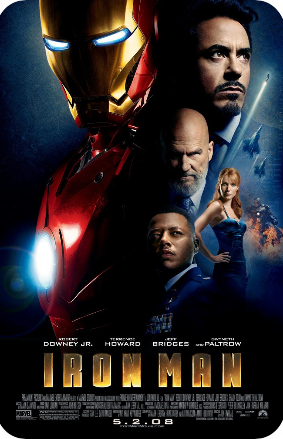

Homem de Ferro
Tony Stark (Robert Downey Jr.) é um industrial bilionário, que também é um brilhante inventor, ao ser sequestrado, ele é obrigado a construir uma arma devastadora, mas ao invés disso, cria uma armadura capaz de mudar a história.


Homem de Ferro
Tony Stark (Robert Downey Jr.) é um industrial bilionário, que também é um brilhante inventor, ao ser sequestrado, ele é obrigado a construir uma arma devastadora, mas ao invés disso, cria uma armadura capaz de mudar a história.
Disponível em streaming:
Crítica
⊗